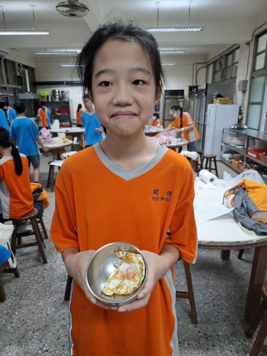
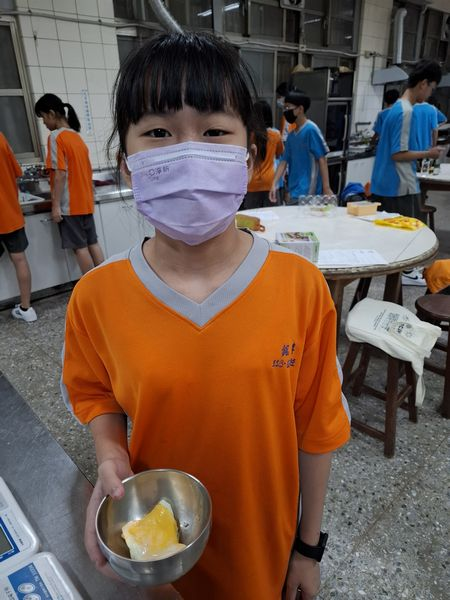
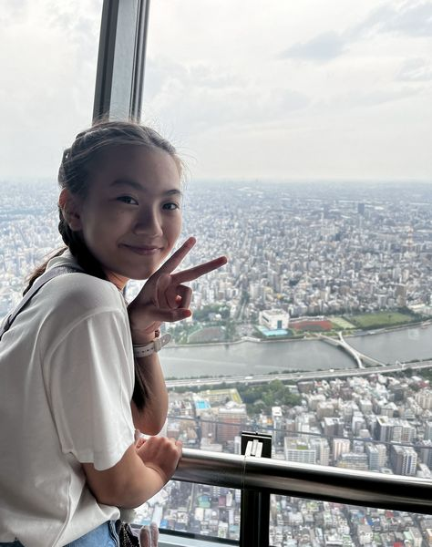
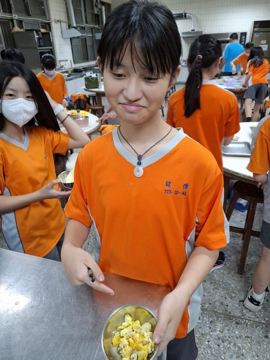
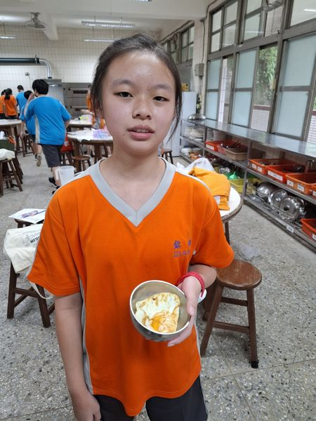

| 31.
王○暄 我的興趣是跳舞 想和大家說:一切順利 |
|
| 32.
王○蘊 我的興趣是直排輪 想和大家說:聲音好尖 |
 |
| 33.
李○倪 我的興趣是玩手機 想和大家說: 我們笑聲好尖 |
|
|
34.卓○喬
我的興趣是看電視 想跟大家說:我們很棒 |
 |
| 35.
林○晴 我的興趣是畫畫 想跟大家說: 我們班好恐怖 |
|
| 36.
胡○涵 我的興趣是畫插圖 希望大家天天開心! |
 |
37. 馬○妡 我的興趣是看小說 想和大家說: 不論失敗或成功 總是有利於自己 |
|
| 38.
郭○彤 我的興趣是唱歌 想跟大家說: 不能隨便嘲笑同學 |
|
| 39.
陳○臻 我的興趣是畫畫 想和大家說: 不要再內涵別人了 |
|
| 40.
陳○蓁 我的興趣是唱歌 想和大家說: 希望我們班感情繼續 那麼好，然後默契不要 用在一些奇怪的地方 |
|
| 41.
陳○潔 我的興趣是一人發呆 想和大家說: 請別無視我， 我也是個人， 雖然我讀書有障礙， 要上資源班， 但請你們和我當朋友 |
 |
| 42.
葉○辰 我的興趣是唱歌 想和大家說: 希望我們一直好下去 不要一直笑同學啦 |
|
| 43.
劉○萱 我的興趣是做甜點 想和大家說: 希望大家天天開心 |
|
| 44.
蕭○岑 我的興趣是玩手機 想和大家說: 我很高冷，請向我學習 |
 |